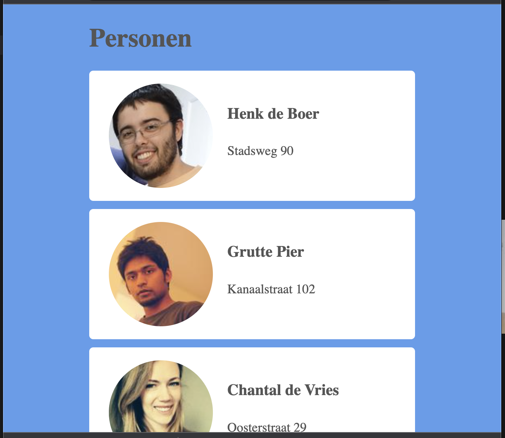

Practicum week 7¶
Inleiding¶
Deze week gaan we verder met Angular. We zullen verschillende manier onderzoeken waarop componenten met elkaar kunnen communiceren en hoe je connectie maakt met de backend. Voordat we dat gaan doen, zullen we wat dieper ingaan op webcomponents, omdat dit een centrale techniek is in Angular en vergelijkbare frameworks. De code die je voor deze week nodig hebt vind je in deze zip. Hierin vind je twee directories: Backend en Webcomponents.
1. Webcomponents¶
Tijdens het plenaire deel is geïllustreerd hoe je door middel van webcomponents en de shadow DOM zelf html-elementen kunt maken. In deze opdracht gebruiken we die kennis en techniek om een lijstje met persoonsgegevens aanzienlijk te vereenvoudigen.
Bekijk de bestanden in de directory Webcomponents. Je ziet dat het best index-bestand behoorlijk veel duplicate code bevat, wat we de boel onoverzichtelijk en ononderhoudbaar maakt. Als je goed oplet, zie je dat het onderstaande deel telkens herhaald wordt:
<div class="card">
<div class="image">
<img src="imgs/pic1.jpeg" alt="Thumbnail">
</div>
<div class="content">
<h4> Henk de Boer </h4>
<p> Stadsweg 90 </p>
</div>
</div>

Plaatjes
Voor het geval je het afvraagt, die plaatjes komen van randomuser.me. Misschien ook nog een aardige API om toe te voegen aan het memory-spel...?
Een dergelijk veel-herhalend stukje code vraag er gewoon om om gecompartamentaliseerd te worden, en webcomponents zijn daar de tool voor. Bekijk de code in person-card.js. Hierin zit al een stukje css en wat andere steigercode, waarin je als het goed is de html van het voorbeeld hierboven herkent.
1a. het webcomponent maken¶
Maak een klasse PersonCard die overerft van HTMLElement. Voorzie de klasse van een property static get observerAttributes die een lijstje bevat van image, name en address. Dit worden de attributen die we later aan onze webcomponent mee kunnen geven.
Zorg voor een constructor waarin je de template die bovenin het bestand gegeven is toevoegt aan this._shadowRoot. Voorzie vervolgens de klassse van drie properties die corresponderen met de img, de h4 en de p in de template. Hier gaan we zometeen de waarden aan toekennen die we bij het maken van een <person-card> meegeven.
Maak tenslotte de methode attributeChanged(name, oldValue, newValue). In de name-parameter zit één van de geobserveerde attributen die je hierboven hebt aangegeven. De oldValue en newValue spreken voor zich. In deze methode moet de (nieuwe) waarde van een attribuut toegekend worden aan het corresponderende property die je hierboven (in de constructor) hebt gemaakt. Let op: voor de naam en het adres volstaat het om de innerHTML aan te passen, maar voor de avatar moet je natuurlijk de src wijzigen.
1b. het webcomponent gebruiken¶
Nu we het webcomponent hebben gemaakt en gedefineerd, kunnen we al die duplicate en relatief complexe html vervangen door een stuk eenvoudiger ogende code – wat er beter uitziet en een stuk onderhoudbaarder is. Gebruik de drie attributen die je in 1a hebt gemaakt om de waarden van de verschillende personen aan de <person-card> mee te geven. Als het goed is, is het resultaat hetzelfde (voor het oog althans: de kwaliteit van onze code-base is significant verbeterd).